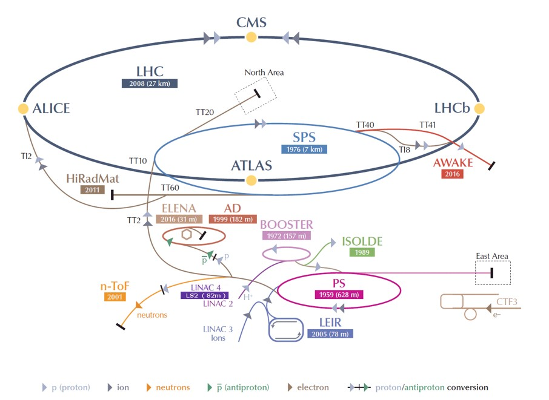
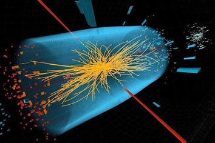
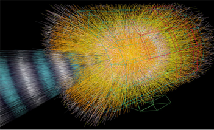
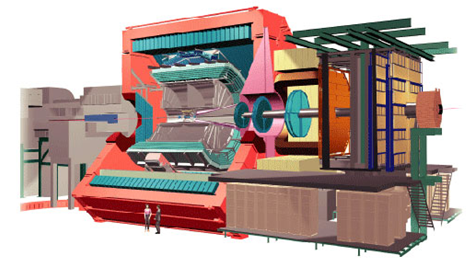

Великий Адронний Колайдер
Передслово

Вели́кий адро́нний кола́йдер — найбільший у світі прискорювач елементарних частинок, збудований у Європейському центрі ядерних досліджень (CERN), поблизу Женеви (Швейцарія), між 1998 і 2008 роками.
Фінансується та розробляється науковцями з понад 100 країн світу та понад 10 тисяч науковців та інженерів приймають участь у цих дослідженнях.
Прискорювач пролягає в тунелі (у формі тора окружністю 27 км) на глибині до 175 метрів під землею на кордоні Франції та Швейцарії, поблизу Женеви, Швейцарії. Перших зіткнень вдалось досягти в 2010 році з енергією в 3,5 тераелектронвольт (ТеВ) на промінь, що приблизно в чотири рази перевищило попередній світовий рекорд. Після модернізації 2015 року вдалось отримати енергію 6,5 ТеВ на промінь (13 ТеВ загальна енергія зіткнення, сучасний світовий рекорд).
Розмір прискорювача пов'язаний з максимальною енергією, яку можна отримати. У випадку колайдера це також функція радіуса машини і сили магнітного поля, яке утримує частинки на своїх орбітах. ВАК повторно використовує тунель довжиною 27 км, який був побудований для попереднього великого прискорювача LEP. Тунель, магніти, порожнини та інші важливі елементи машини є основними обмеженнями, які визначають проектну енергію 7 Тев на протонний пучок.
ВАК прискорює два пучки частинок одного виду, або протонів, або іонів свинцю, які є адронами. Прискорювач може прискорювати лише певні типи частинок: по-перше, вони мають бути зарядженими (оскільки пучками керують електромагнітні пристрої, які можуть впливати лише на заряджені частинки), а по-друге, за винятком особливих випадків, вони мають бути стабільними. Це обмежує кількість частинок, які можна практично прискорити до електронів, протонів та іонів, а також до всіх їхніх античастинок.
У круглому прискорювачі, такому як ВАК, важкі частинки, такі як протони (протони приблизно в 2000 разів більші за електрони), мають набагато менші втрати енергії за оберт через синхротронне випромінювання, ніж легкі частинки, такі як електрони. Тому в кругових прискорювачах для отримання зіткнень з найбільшою енергією ефективніше прискорювати масивні частинки.
Історія побудови.
Проєкт був задуманий 1984 року, його реалізацію почали 2001-го. Для спорудження ВАК було використано існуючий тунель, в якому до 2000 року працював електрон-позитронний колайдер LEP.
1998 років чотири експерименти - ALICE, ATLAS, CMS і LHCb - отримали офіційне схвалення, і на чотирьох майданчиках розпочалися будівельні роботи. З того часу три менші експерименти (TOTEM, LHCf і MoEDAL) приєдналися до пошуків: TOTEM, встановлений поруч з CMS,і LHCf, поруч з ATLAS і MoEDAL розгорнутий у тій самій області перетину, що й детектор LHCb.
19 листопада 2006 закінчено будівництво спеціальної кріогенної лінії для охолодження магнітів.
Перший запуск був 10 вересня 2008 року, пучок частинок з енергією 450 гігаелектрон-вольт проведено по всьому кільцю колайдера.
30 березня 2010 року у Великому адронному колайдері вперше успішно здійснено зіткнення протонів, що рухалися зі швидкістю, наближеною до швидкості світла.
Передісторія:
5 квітня 1976 були запущені перші пучки протонів в новому 7-кілометровому прискорювачі у ЦЕРНі — протонний суперсинхротрон (SPS). Протони розганялися в ньому до рекордної енергії 400 ГеВ і прямували на нерухомі мішені. SPS продовжував успішно працювати і в еру LEP, і навіть у XXI столітті.
18 липня 1977 Був опублікований перший проект Великого електрон-позитронного колайдера (LEP) в ЦЕРНі, який буде встановлений в спеціальному кільцевому тунелі завдовжки майже 30 км. Тоді ж була висловлена і думка, що в майбутньому в тому ж тунелі можна буде розмістити і адронний коллайдер, який, можливо, буде працювати одночасно з LEP. Тому тунель для LEP проектувався з урахуванням такої можливості.
Початок робіт над створенням магнітів в 1981. Почалися розробки магнітів для ВАК — основи майбутнього колайдера. Магніти повинні були тримати поле близько 10 Тесла, а значить, їх необхідно робити надпровідними, але при цьому вони повинні вміщуватися в просторі підземного тунелю. Основний упор робився на конфігурацію «два в одному» (дві окремі вакуумні труби для зустрічних протонних пучків, поміщені в єдиний Кріостат), але розглядалися й інші варіанти. Конфігурація «два-в-одному» стала згодом емблемою ВАК.
Прокладання 27-кілометрового тунелю з січня 1983 по січень 1988.
Протягом 5 років у ЦЕРНі велися екскаваційні роботи з прокладанням кільцевого 27-кілометрового тунелю. У ньому розташовуэться Великий електрон-позитронного колайдера (LEP), а по закінченні його роботи, в 2000-і роки, в тому ж тунелі змонтують і Великий адронний колайдер. Прокладка тунелю стала найбільшим на той час екскаваціним проектом в Європі (рекорд був побитий в 1988 році, коли почалися роботи з прокладання підземного тунелю під Ламаншем.) Вартість цих робіт склала більше половини всього бюджету LEP
14 липня 1987 УЦЕРНі починає роботу проект LAA, завданням якого є вироблення загальних принципів, за якими будуть проектуватися детектори для майбутнього адронного колайдера.
Призначення та з якою метою ВАК був побудований.
Головне завдання Великого адронного колайдера — достовірно виявити хоч якісь відхилення від сукупності теорій, що становлять сучасне уявлення про фундаментальні частки та взаємодії. Незважаючи на свої переваги, вона має й труднощі: не визначає гравітаційну взаємодію, не пояснює існування темної матерії та темної енергії. Колайдер повинен допомогти відповісти на питання.
Один із шляхів об'єднання законів усіх фундаментальних взаємодій у рамках єдиної теорії — гіпотеза «суперсиметрії», в рамках якої передбачається існування важчого партнера у кожної відомої елементарної частки. Засновані на ній теорії найбільш популярні в області «Нової фізики» (зокрема, саме суперсиметричні частинки розглядаються як кандидати на роль гіпотетичних частинок темної матерії), і пошук її експериментальних підтверджень є одним із головних завдань роботи ВАК.
Важливим моментом на шляху до повнішої, ніж Стандартна модель, теорії, є вивчення хіггсовського механізму порушення симетрії електрослабкої взаємодії. Його, у свою чергу, найзручніше досліджувати через відкриття та вивчення бозона Хіггса. Він є квантом так званого поля Хіггса, при проходженні через яке частинки знаходять свою масу. Існування хіггсовського бозона було передбачено в 1964 році, і його пошук став однією з основних цілей проекту ВАК. Після довгоочікуваного оголошення про відкриття цієї частки у 2012 році наукова програма ВАК передбачає численні завдання щодо досконалого вивчення його властивостей.
Космологічні та астрофізичні спостереження показали, що на всю видиму матерію припадає лише близько 5% маси-енергії Всесвіту. Триває пошук частинок або явищ, відповідальних за темну матерію (27%) і темну енергію (68%). Дуже популярна ідея полягає в тому, що темна матерія складається з нейтральних, але ще не відкритих, суперсиметричних частинок.
Вивчення кварк-глюонної плазми.
Крім протон-протонних зіткнень, програма роботи Великого адронного колайдера передбачає такожзіткнення важких іонів. При зіткненні двох ультрарелятивістських ядер утворюється і потім розпадається щільна і дуже гаряча грудка ядерної речовини — кварк-глюонної плазми. Розуміння явищ, що відбуваються при переході в цей стан, в якому знаходилася речовина в ранньому Всесвіті, та її подальшому охолодженні, коли кварки стають пов'язаними, необхідне для побудови більш досконалої теорії сильних взаємодій, корисної як для ядерної фізики, так і для астрофізики.
Вивчення фотон-адронних та фотон-фотонних зіткнень.
Дослідження антиматерії та дослідження Т-кварків.
Дослідження темної енергії - це форма енергії, пов'язана з вакуумом у просторі, що становить приблизно 70% Всесвіту. Вона рівномірно розподілена у Всесвіті та часі, тобто її вплив не зменшується з розширенням Всесвіту. Рівномірний розподіл означає, що темна енергія не має локальних гравітаційних ефектів, але має глобальний вплив на Всесвіт в цілому. Це призводить до виникнення сили відштовхування, що призводить до прискорення розширення Всесвіту. Експериментальні вимірювання швидкості розширення та його прискорення, разом з іншими науковими даними, підтвердили існування темної енергії і були використані для оцінки її кількості.
Велику перевагу має коллайдер, де стикаються зустрічні промені над іншими типами прискорювачів, в яких стикається промінь і нерухома ціль. При зіткненні двох пучків енергія зіткнення є сумою енергій двох пучків. Промінь з тою самою енергією, яка вражає фіксовану ціль, призведе до зіткнення набагато менше енергії.
Доступна енергія в обох випадках це енергія центру мас. У першому випадку так і є просто сума енергій двох частинок, що стикаються (E = Eпроменя1 + Eпроменя2), тоді як у другому вона пропорційна до кореня квадратного з енергії частинки, що влучила в ціль(E ∝ √Eпроменя).
Будова ВАК
Прискорювальний комплекс в CERN - це послідовність машин з все більш високими енергіями. Кожна машина вводить промінь у наступний, який бере на себе завдання підняти промінь ще вище за енергію, і так далі. У Великому адронному колайдері (ВАК) — останньому елементі цього ланцюга — кожен пучок частинок прискорюється до рекордної енергії 6,5 ТеВ. Крім того, більшість інших прискорювачів у мережі мають свої власні експериментальні зали, де їх балки використовуються для дослідів при нижчих енергіях.
Процес розгону протонів водню:
Беруть атоми водню взяті з пляшки з воднем. Далі отримують протони відриваючи їх від атому.Протони вводяться в PS Booster (PSB) з енергією 50 МеВ. Бустер розганяє їх до 1,4 ГеВ і потім подається на протонний синхротрон (PS), де він прискорюється до 25 ГеВ. Потім протони надсилаються до суперпротонного синхротрона (SPS) де вони розганяються до 450 ГеВ. Зрештою вони передаються на ВАК (обидва за годинниковою стрілкою і проти годинникової стрілки), де вони прискорюються 20 хвилин до 6,5 ТеВ.
Крім прискорення протонів, прискорювальний комплекс може також прискорювати іони свинцю. Іони свинцю виробляються з високоочищеного зразка свинцю, нагрітого до температури близько 800°C. Пари свинцю іонізуються електронним струмом. Утворюється багато різних станів заряду з максимумом навколо Pb29+. Ці іони відбираються та прискорюються до 4,2МеВ (енергія на нуклон) перед тим, як пройти крізь вуглецеву фольгу, яка розділяє більшість із них до Pb54+. Промінь Pb54+ накопичується, а потім прискорюється до 72 МеВ в кільці іонів низької енергії (LEIR), яке передає їх до PS. PS прискорює промінь до 5,9 ГeВ і направляє його до SPS після того, як спочатку пропустить його через другу фольгу, де він повністю звільняється до Pb82+.SPS прискорює його до 177 ГеВ, а потім надсилає на ВАК, який прискорює його до 2,56 ТeВ.
ВАК не є ідеальним колом. Він складається з восьми дуг і восьми "вставок". Дуги містять дипольні "згинальні" магніти, по 154 в кожній дузі. Вставка складається з довгої прямої ділянки і двох (по одному на кожному кінці) перехідних ділянок - так званих "пригнічувачів дисперсії". Точне розташування прямої ділянки залежить від конкретного використання вставки: фізика (зіткнення пучків в експерименті), інжекція, скидання пучка, очищення пучка.
Сектор визначається як частина машини між двома точками вставки. Вісім секторів є робочими одиницями ВАК: встановлення магнітів відбувається сектор за сектором, апаратне забезпечення вводиться в експлуатацію сектор за сектором, і всі диполі сектора з'єднані послідовно і знаходяться в одному безперервному кріостаті. Живлення кожного сектора незалежне.
Октант починається з середини дуги і закінчується в середині наступної дуги, таким чином охоплюючи повну вставку. Тому цей опис є більш практичним, коли ми розглядаємо використання магнітів для спрямування променів на зіткнення або через секції впорскування, вивантаження та очищення.
У прискорювачі частинки циркулюють у вакуумній трубі і маніпулюють ними за допомогою електромагнітних пристроїв: дипольні магніти утримують частинки на майже кругових орбітах, квадрупольні магніти фокусують пучок, а прискорювальні порожнини є електромагнітними резонаторами, які прискорюють частинки, а потім утримують їх на постійній енергії, компенсуючи втрати енергії.
На ВАК встановлено 7 детекторів, розміщених у міжсекційних блоках. Два з них — ATLAS та CMS (Компактний мюонний соленоїд) — великогабаритні детектори загального призначення (англ. general-purpose detectors), розраховані для різноманітних досліджень, але конструктивно оптимізовані для пошуку бозона Хіггса та фізики за межами Стандартної Моделі.
ALICE (A Large Ion Collider Experiment, Іонний колайдерний експеримент) оптимізований для досліджень кварк-глюооної плазми та законів квантової хромодинаміки у зіткненнях важких йонів та протонів. LHCb (LHC beauty experiment) є четвертим за розміром експериментом, він оптимізований для досліджень CP-симетрії та пошуку фізики за межами Стандартної Моделі в розпадах адронів, що містять c- та b-кварки.
ATLAS — один з двох детекторів з широкою сферою функціонування з метою нових відкриттів та відповідей на старі питання. ATLAS має довжину 46 метрів, діаметр — 25 метрів і вагу близько 7000 тонн.
Експеримент є результатом співробітництва за участю близько 3000 фізиків з більш ніж 175 установ у 38 країнах світу. Проект очолювали протягом перших 15 років Пітер Дженні, між 2009 і 2013 — Фабіола Жданотті, а з 2013 року його очолює Девід Чарльтон.
ATLAS — це один з двох експериментів на ВАК, пов'язаних з відкриттям частинки, схожої на бозон Хіггса в липні 2012 року.
CMS — детектор з широкою сферою функціонування, котрий «полює» на бозони Хіггса і шукає природу походження темної матерії.
ALICE — вивчає «рідинну» форму існування матерії, відому як кварк-глюонна плазма, короткий проміжок існування якої виник відразу ж після Великого Вибуху.
LHCb — вивчає рівну кількість матерії та антиматерії, яка вивільняється після Великого вибуху. Намагається дати відповідь на питання: «Що сталося зі „зниклою“ антиматерією?»
На кожному з чотирьох основних детекторів працює окрема наукова колаборація, кожна з яких налічує понад тисячу фізиків та інженерів з десятків країн світу.
Окрім чотирьох основних експериментів, кожен з яких має свою точку зіткнення пучків, є додаткові невеликі експерименти, розташовані поруч з одним з основних, використовуючи частину їх інфраструктури. Такими є TOTEM (розташований біля CMS), LHCf (LHC forward experiment, розташований біля ATLAS), MOEDAL (розташований біля LHCb). Споруджується восьмий експеримент, FASER. Ці невеликі експерименти мають дуже вузьку галузь досліджень.
Вакуум у ВАК: Особливістю ВАК є наявність не однієї, а трьох вакуумних систем:
- ізоляційний вакуум для кріомагнітів
- ізоляційний вакуум для лінії розподілу гелію
- пучковий вакуум.
Тиск пучкового вакууму становить 10-13 атм (надвисокий вакуум), щоб уникнути зіткнень з молекулами газу. Найбільший об'єм, який потрібно відкачати в ВАК - це ізоляційний вакуум для кріомагнітів.
Магніти: У ВАК є велика різноманітність магнітів, включаючи диполі, квадруполі, секступолі, октуполі, декаполі і т.д., що в цілому дає близько 9600 магнітів. Кожен тип магніту робить свій внесок в оптимізацію траєкторії частинки. Більшість коригувальних магнітів вбудовано в холодну масу головних диполів і квадруполів. Магніти ВАК мають або подвійну апертуру (наприклад, головні диполі), або одинарну апертуру (наприклад, деякі з потрійних квадруполів кінцевого фокусування). Вставні квадруполі - це спеціальні магніти, які використовуються для фокусування пучка до найменшого можливого розміру в точках зіткнення, тим самим максимізуючи ймовірність того, що два протони вдаряться лоб в лоб один об одного. Найбільшими магнітами є 1232 диполі.
Порожнини: Основна роль порожнин ВАК полягає в тому, щоб утримувати пучки 2808 протонів щільно скупченими, щоб забезпечити високу світність у точках зіткнення і максимізувати кількість зіткнень. Вони також передають пучку радіочастотну енергію під час прискорення до максимальної енергії. Надпровідні порожнини з малими втратами енергії і великим запасом енергії є найкращим рішенням. У ВАК використовується вісім порожнин на пучок, кожна з яких забезпечує 2 МВ (прискорювальне поле 5 МВ/м) на 400 МГц. Порожнини працюють при температурі 4,5 К (-268,7ºC) (магніти ВАК використовують надплинний гелій при 1,9 К або -271,3ºC). Для ВАК вони згруповані по чотири в кріомодулі, по два кріомодулі на пучок, і встановлені в довгій прямій секції машини, де поперечна міжпучкова відстань збільшена зі звичайних 195 мм до 420 мм.
Диполі: Диполі ВАК є особливими з кількох причин. По-перше, вони становлять значний технологічний виклик для конструкції ВАК. У такому прискорювачі протонів, як ВАК, максимально досяжна енергія безпосередньо пов'язана з напруженістю дипольного поля, враховуючи певне коло прискорення. Диполі ВАК є надпровідними електромагнітами, які мають вирішальне значення для забезпечення необхідної високої напруженості поля 8,3 Тл по всій їхній довжині.
Використання надпровідних ніобієво-титанових (NbTi) кабелів у диполях ВАК є ще однією відмінною рисою. Ці кабелі стають надпровідними при температурі нижче 10 К (-263,2°C), що дозволяє їм проводити електрику без опору. ВАК працює при надзвичайно низькій температурі 1,9 K (-271,3°C), навіть нижчій за температуру космічного простору (2,7 K ,-270,5°C). Струм 11 850А протікає в диполях, створюючи високе магнітне поле 8,33 Тл, необхідне для огинання пучків з енергією 7 ТэВ навколо 27-кілометрового кільця ВАК.
Цей акцент на надпровідності має вирішальне значення, оскільки робота магнітів при вищій температурі, наприклад, 4,5 К (-268,7°C), обмежила б струм, який вони можуть витримати, до приблизно 8500 А, створюючи магнітне поле приблизно 6 Тл. Температура 1,9 К (-271,3°C) досягається завдяки закачуванню надплинного гелію в магнітні системи. Кожен диполь має довжину 15 м і важить близько 35 тон.
Магнітні котушки ВАК: намотуються на кабель, що складається з 36 скручених 15-міліметрових жил, кожна з яких, у свою чергу, складається з 6000-9000 окремих ниток, кожна з яких має діаметр лише 7 мікрометрів.
Кріогенна система ВАК є найбільшою кріогенною системою у світі та одним з найхолодніших місць на Землі. Така низька температура необхідна для роботи магнітів, які утримують протони на курсі (див. питання: "Що такого особливого в диполях ВАК?"). Щоб підтримувати 27-кілометрове кільце (4700 тонн матеріалу в кожному з восьми секторів) при температурі надплинного гелію (1,9 К, -271,3°C), кріогенна система ВАК повинна забезпечувати безпрецедентну загальну потужність охолодження - близько 150 кВт для холодильників при 4,5 К і 20 кВт для холодильників при 1,9 К. Схема холодильної системи базується на п'яти "кріогенних островах". Кожен "острів" повинен розподіляти холодоагент і переносити кіловати холодильної потужності на велику відстань. Весь процес охолодження займає кілька тижнів.
Перша фаза розгортається у два етапи: спочатку гелій охолоджується в теплообмінниках холодильників до 80 К, використовуючи близько 10 000 тонн рідкого азоту. Потім турбіни холодильників знижують температуру гелію до 4,5 K (-268,7ºC), роблячи його готовим до впорскування в холодну масу магнітів. Після заповнення магнітів холодильні установки знижують температуру до 1,9 K (-271,3ºC).
Загалом потрібно близько 120 тонн гелію, з яких приблизно 90 тонн виділяється для магнітів, а решта розподіляється між трубами і холодильними установками. Примітно, що протокол уникає прямого впорскування рідкого азоту в ВАК, щоб запобігти будь-якому потенційному джерелу асфіксії в підземному тунелі.
Вибір робочої температури для ВАК так само пов'язаний з "супер" властивостями гелію, як і з властивостями надпровідного ніобієво-титанового сплаву в котушках магнітів. За атмосферного тиску газ гелій зріджується при температурі близько 4,2 K (-269,0 °C), але при подальшому охолодженні він зазнає другої фазової зміни при температурі близько 2,17 K (-271,0 °C) до "надплинного" стану. Серед багатьох чудових властивостей надплинний гелій має дуже високу теплопровідність, що робить його найкращим холодоносієм для охолодження і стабілізації великих надпровідних систем.
Загалом, кріогенна система ВАК потребує близько 40 000 герметичних з'єднань труб, і 120 т гелію потрібно машині ВАК, щоб підтримувати робочу температуру магнітів на рівні 1,9 К. Під час нормальної роботи більша частина гелію циркулює в замкнутих холодильних контурах. Тим не менше, щороку певний відсоток запасів втрачається через зупинки установки, витоки в атмосферу, кондиціонування установок та експлуатаційні проблеми.
Протони ВАК циркулюють навколо кільця у чітко визначених пучках. Пучкова структура сучасного прискорювача є прямим наслідком радіочастотної схеми прискорення. Протони можна прискорювати лише тоді, коли радіочастотне поле має правильну орієнтацію при проходженні частинок через прискорювальну порожнину, що відбувається в чітко визначені моменти під час радіочастотного циклу. У ВАК, за номінальних умов роботи, кожен протонний пучок має 2808 пучків, кожен з яких містить близько 1011 протонів.
Розмір пучка не є постійним по всьому кільцю. Кожен пучок, коли він циркулює навколо ВАК, стискається і розширюється - наприклад, він максимально стискається навколо точок взаємодії, щоб збільшити ймовірність зіткнення. Коли частинки знаходяться далеко від точки зіткнення, їхні розміри становлять кілька сантиметрів завдовжки і міліметр завширшки. Однак, коли вони наближаються до точок зіткнення, вони стискаються приблизно до 20 мм (товщина людської волосини - близько 50 мм), щоб збільшити ймовірність протон-протонних зіткнень. Збільшення кількості пучків - один із способів підвищити світність у машині. При повній світності ВАК використовує відстань між пучками 7,5 м.
Інтервал між пучками 7,5 м відповідає частоті 40 МГц, що означає, що пучки повинні проходити кожну з точок зіткнення в ВАК 40 мільйонів разів на секунду. Однак, з практичних міркувань, є кілька більших проміжків у структурі пучків, які дають час, наприклад, магнітам-"кікерам" увімкнутися, щоб інжектувати або скинути пучки. Середня частота перетину пучків у ВАК становить близько 30 МГц.
Кожен промінь складається з майже 3000 пучків частинок, а кожен пучок містить до 100 мільярдів частинок. Частинки настільки малі, що ймовірність зіткнення будь-яких двох частинок дуже мала. Коли пучки перетинаються, відбувається до 40 зіткнень між 200 мільярдами частинок. Пучки перетинаються в середньому близько 30 мільйонів разів на секунду, тому ВАК генерує близько 1 мільярда зіткнень частинок на секунду.
Промінь може циркулювати понад 10 годин, подолавши понад 10 мільярдів кілометрів - достатньо, щоб дістатися планети Нептун і повернутися назад. На швидкості, близькій до швидкості світла, протон у ВАК робить 11 245 кіл щосекунди.
Енергоспоживання ВАК становить близько 120 МВт (230 МВт для всього ЦЕРН), що відповідає приблизно 1/3 енергоспоживання домогосподарств у кантоні (штаті) Женева. Річне енергоспоживання ЦЕРН становить близько 1,3 ТВт-год (2015 рік). Це включає в себе базове навантаження на майданчик та експерименти. Загальна річна вартість експлуатації ВАК становить близько 19 мільйонів євро. ЦЕРН забезпечується переважно французькою компанією EDF (швейцарські компанії EOS і SIG використовуються лише у випадку дефіциту з Франції).
Значна частина електроенергії, яку споживає ВАК, йде на підтримання системи надпровідних магнітів при робочих температурах (1,8 і 4,2 К) залежно від магнітів. Завдяки надпровідній технології, що використовується для його магнітів, номінальне споживання ВАК не набагато вище, ніж у Суперпротонного синхротрона (SPS), хоча ВАК набагато більший за розмірами і має вищу енергію.
| Діаметр окружності | 26 659 м |
| Робоча температура диполя | 1.9 K (-271.3ºC) |
| Кількість магнітів | 9593 |
| Кількість основних диполів | 1232 |
| Кількість основних квадруполів | 392 |
| Кількість радіочастотних порожнин | 8 в кожному напрямку |
| Енергія протонів | 6.5 TeВ(на практиці 7 TeВ) |
| Енергія іонів | 2.56 ТеВ/у (Енергія на нуклон) |
| Пікове магнітне дипольне поле | 7.74 T |
| Відстань між пучками | ~7.5 м |
| Світність (протони) | ~7.5 м |
| Кількість пучків на протонний пучок (розрахункове значення) | ~ 1.2 x 1034 cм-2 s-1 |
| Кількість протонів у пучку (на старті) | 1.2 x 1011 |
| Кількість обертів за секунду | 11 245 |
| Кількість зіткнень на секунду | 1 мільярд |
Детектори:
ALICE - це детектор, що спеціалізується на вимірюванні та аналізі зіткнень між свинцем та іонами. Він вивчає властивості кварк-глюонної плазми - стану матерії, в якому кварки і глюони в умовах дуже високих температур і густини більше не обмежені всередині адронів. Такий стан матерії, ймовірно, існував одразу після Великого вибуху, до того, як були утворені такі частинки, як протони і нейтрони. Міжнародна співпраця налічує понад 1800 учасників з 174 інститутів з 42 країн світу.
| Розмір | 26м в довжину, 16м в висоту, 16м в ширину |
| Вага | 10 000 тон |
| Місце розташування | Сержи, Франція |
ATLAS - це детектор призначений для охоплення якомога ширшого спектру фізичних досліджень на ВАК, від прецизійних вимірювань бозона Хіггса до пошуків нової фізики за межами Стандартної моделі. Головною особливістю детектора ATLAS є його величезна система магнітів у формі пончика. Вона складається з восьми 25-метрових котушок надпровідних магнітів, розташованих у вигляді циліндра навколо променевої труби, що проходить через центр детектора. ATLAS є найбільшим за об'ємом колайдером-детектором з коли-небудь побудованих. У його роботі беруть участь майже 3000 наукових авторів з 182 установ у 38 країнах світу.

| Розмір | 46м в довжину, 26м в висоту, 26м в ширину |
| Вага | 7000 тон |
| Місце розташування | Мейрин, Швейцарія |
CMS - це детектор загального призначення з подібними до ATLAS фізичними цілями, але з іншими технічними рішеннями і конструкцією. Він побудований навколо величезного надпровідного соленоїда. Він має форму циліндричної котушки надпровідного кабелю, яка генерує магнітне поле в 4 Тл. У роботі над CMS беруть участь понад 3500 вчених, інженерів і студентів з 201 інституту в 36 країнах світу.

| Розмір | 21м в довжину, 15м в висоту, 15м в ширину |
| Вага | 7000 тон |
| Місце розташування | Мейрин, Швейцарія |
LHCb спеціалізується на вивченні незначної асиметрії між речовиною та антиречовиною, яка присутня у взаємодіях B-частинок (частинок, що містять b-кварк). Розуміння цього явища має стати неоціненним для відповіді на питання: "Чому наш Всесвіт складається з матерії, яку ми спостерігаємо?". Експеримент LHCb використовує серію субдетекторів для виявлення і вимірювання розпаду частинок, що утворюються в одному з напрямків пучка. Перший субдетектор будується навколо точки зіткнення, за ним слідує послідовність інших субдетекторів уздовж лінії пучка на довжині 20 м. У колаборації LHCb беруть участь понад 1200 учасників з 71 інституту з 16 країн.

| Розмір | 21м в довжину, 10м в висоту, 13м в ширину |
| Вага | 5600 тон |
| Місце розташування | Ферне-Вольтер, Франція |
LHCf - це невеликий експеримент, який вимірює частинки, що утворюються дуже близько до напрямку пучків у протон-протонних і протон-ядерних зіткненнях на ВАК. Мотивація полягає в тому, щоб перевірити моделі, які використовуються для оцінки первинної енергії надвисокоенергетичних космічних променів. Детектори розташовані на відстані 140 м від точки зіткнення ATLAS. У колаборації беруть участь близько 30 членів з 14 інститутів у 4 країнах.
| Розмір | два детектори, кожен довжиною 30 см, 60 см в висоту, 10 см в ширину |
| Вага | 40 кг кожен |
| Місце розташування | Мейрін, Швейцарія (поблизу ATLAS) |
MOEDAL (MOnopole and Exotics Detector At the LHC) - це невеликий експеримент з пошуку гіпотетичних високоіонізуючих частинок, таких як магнітні монополі. Детектор складається з масиву з 400 детекторів ядерних треків, кожен з яких складається зі стопки з 10 листів пластикового сцинтилятора, загальною площею 250 кв.м, розташованих навколо точки зіткнення поблизу центру детектора LHCb. MOEDAL налічує 16 членів з 15 інститутів у 7 країнах.
| Розмір | 70 коробок розміром 0,5 м х 0,75 м |
| Вага | 500 кг |
| Місце розташування | Ферне-Вольтер, Франція (поблизу LHCb) |
TOTEM вимірює ефективний розмір або "поперечний переріз" протона в ВАК. Для цього TOTEM повинен бути здатним виявляти частинки, що утворюються дуже близько до пучків ВАК. Для цього потрібні детектори, розміщені в спеціально сконструйованих вакуумних камерах, так званих "римських горщиках", які з'єднані з пучковими трубами ВАК. Двадцять шість римських горщиків розміщені попарно в чотирьох місцях поблизу точки зіткнення в експерименті CMS. TOTEM налічує понад 160 членів з 11 інститутів у 8 країнах.
| Розмір | 8 датчиків, розподілених на 440 м |
| Вага | 20 тон |
| Місце розташування | Сессі, Франція(поблизу CMS) |
Сучасний детектор фізики високих енергій загального призначення, такий як ATLAS або CMS, має бути герметичним, щоб існувала лише невелика ймовірність того, що частинка (яку можна виявити) пролетить непоміченою через область, яка не контролюється приладами. Для інженерної зручності більшість сучасних детекторів на колайдерах частинок, таких як ВАК, мають конструкцію "ствол плюс торцеві заглушки", де циліндричний детектор покриває центральну область, а дві плоскі круглі "торцеві заглушки" покривають кути, близькі до пучка (передня область). ALICE і LHCb мають асиметричну форму, оскільки вони зосереджені на більш специфічних галузях фізики.
Які основні компоненти детектора?
Мета великих детекторів, встановлених на ВАК, - ідентифікувати вторинні частинки, що утворюються при зіткненнях, і вимірювати їхні положення в просторі, заряди, швидкість, масу та енергію. Для цього детектори мають багато шарів або "субдетекторів", кожен з яких відіграє певну роль у реконструкції зіткнень. Завершує конструкцію система магнітів. Її функція полягає в тому, щоб розділити різні частинки відповідно до їхнього заряду і дозволити виміряти їхній імпульс - фізичну величину, пов'язану з масою і швидкістю частинки.
Прилади для відстеження виявляють треки електрично заряджених частинок за слідами, які вони залишають, іонізуючи речовину. У магнітному полі вони можуть бути використані для вимірювання кривизни траєкторії частинки і, отже, її імпульсу. Це може допомогти в ідентифікації частинки. Більшість сучасних пристроїв для відстеження не роблять треки безпосередньо видимими. Натомість вони виробляють електричні сигнали, які можна записати. Комп'ютерна програма реконструює патерни записаних треків.
Два спеціалізовані типи трекінгових пристроїв - це вертексні детектори та мюонні камери. Вершинні детектори розташовуються близько до точки взаємодії (первинної вершини); мюонні камери розташовуються на зовнішніх шарах детектора, оскільки мюони - єдині заряджені частинки, здатні проходити крізь метри щільного матеріалу.
Існує два основних способи побудови пристроїв стеження:
- Газоподібні камери: У цьому методі іонізованим середовищем є газ, а іони або електрони збираються на електродах, зазвичай у вигляді дротів або прокладок під сильним електричним полем. У дрейфових камерах положення треку знаходять, вимірюючи час, за який електрони досягають анодного дроту, вимірюваний з моменту проходження зарядженої частинки. Це призводить до вищої просторової роздільної здатності для ширшого розділення дротів; дрейфові камери зазвичай мають кілька сантиметрів у поперечнику, що дає просторову роздільну здатність 50-100 мм. У камері часової проекції об'єм дрейфу набагато більший, до 2 м і більше, а чутливі дроти розташовані на одній торцевій поверхні.
- Напівпровідникові детектори: У цьому методі частинка створює електрони і дірки при проходженні через напівпровідник зі зворотним зміщенням, зазвичай кремній. Пристрої поділяються на смужки або пікселі, а типова роздільна здатність становить 10 мм.
Калориметри - це прилади, призначені для вимірювання енергії частинок шляхом їх зупинки та вимірювання кількості енергії, що виділяється. Існує два основних типи калориметрів: електромагнітні (ECAL) та адронні (HCAL). Вони використовують різні матеріали залежно від їхнього призначення. ECAL, як правило, повністю поглинає електрони і фотони, які взаємодіють за допомогою електромагнітної сили. Сильно взаємодіючі частинки (адрони), такі як протони і піони, починають втрачати енергію в ECAL, але будуть зупинені лише в HCAL. Мюони (і нейтрино) будуть проходити через обидва шари. Калориметри дозволяють ідентифікувати нейтральні частинки, такі як фотони і нейтрони. Хоча ці частинки не видно в пристроях для відстеження, їх можна виявити за енергією, яку вони позичають в калориметрах.

Калориметри зазвичай складаються з шарів "пасивного" або "поглинаючого" матеріалу високої щільності, наприклад, свинцю, що чергуються з шарами "активного" середовища, наприклад, пластикових сцинтиляторів або рідкого аргону.
Детектори також часто мають субдетектори, що вимірюють швидкість заряджених частинок, що є важливим фактором для ідентифікації частинок.
Існує два важливих методи вимірювання швидкості частинок:
- Черенковське випромінювання: Коли заряджена частинка проходить через середовище з певною швидкістю, вона випромінює фотони під певним кутом, який залежить від швидкості. У поєднанні з вимірюванням імпульсу частинки, швидкість можна використовувати для визначення маси і, отже, ідентифікації частинки. Черенковське випромінювання виникає, коли частинка рухається швидше за швидкість світла в середовищі.
- Перехідне випромінювання: Коли релятивістська заряджена частинка перетинає неоднорідне середовище, особливо межу між матеріалами з різними електричними властивостями, вона випромінює випромінювання більш-менш пропорційно до своєї енергії. Це дозволяє відрізнити типи частинок один від одного.
Майбутнє ВАК
Дослідження Future Circular Collider (FCC) розробляє проекти для нової дослідницької інфраструктури для розміщення наступного покоління більш продуктивних колайдерів частинок для розширення досліджень, які зараз проводяться на LHC, коли фаза високої світності (HL-LHC) досягне свого завершення приблизно в 2040 році.
Метою FCC є розсунути кордони енергії та інтенсивності коллайдерів частинок з метою досягнення енергії зіткнення 100 ТеВ у пошуках нової фізики.
Міжнародне співробітництво понад 150 університетів, науково-дослідних інститутів і промислових партнерів з усього світу розробляє можливості для кругових колайдерів, нових детекторів, відповідної інфраструктури, оцінки витрат, глобальних сценаріїв впровадження, а також відповідних міжнародних структур управління.
FCC розглядає сценарії для трьох різних типів зіткнень частинок: адронних (протон-протонних і важких іонних) зіткнень, як у LHC (FCC-hh), електрон-позитронних зіткнень (FCC-ee), як у попередньому LEP. Інші варіанти включають протонно-електронні зіткнення або зіткнення протонних важких іонів.
Зараз вчені проводять дослідження фізики та детектора для кожного варіанту. Паралельно спеціалізовані групи експертів проводять поглиблений аналіз інфраструктури, операційних концепцій і необхідних ключових технологій.
Звіт про концептуальний дизайн FCC був поданий як внесок до оновлення Європейської стратегії з фізики елементарних частинок на 2020 рік. Після ухвалення цього оновлення Радою CERN у 2020 році CERN отримав повноваження провести технічне та фінансове обґрунтування для FCC, щоб бути готовим до наступного оновлення стратегії, запланованого на 2027 рік.